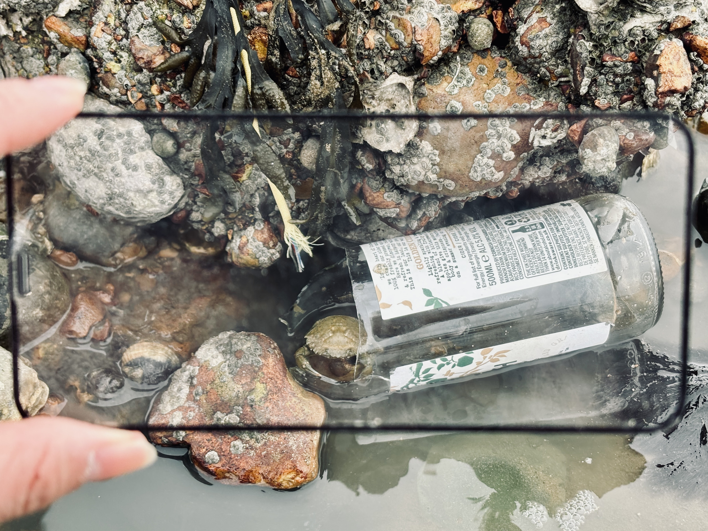
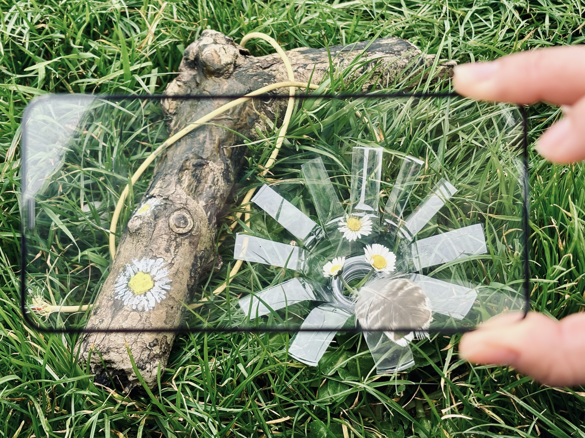
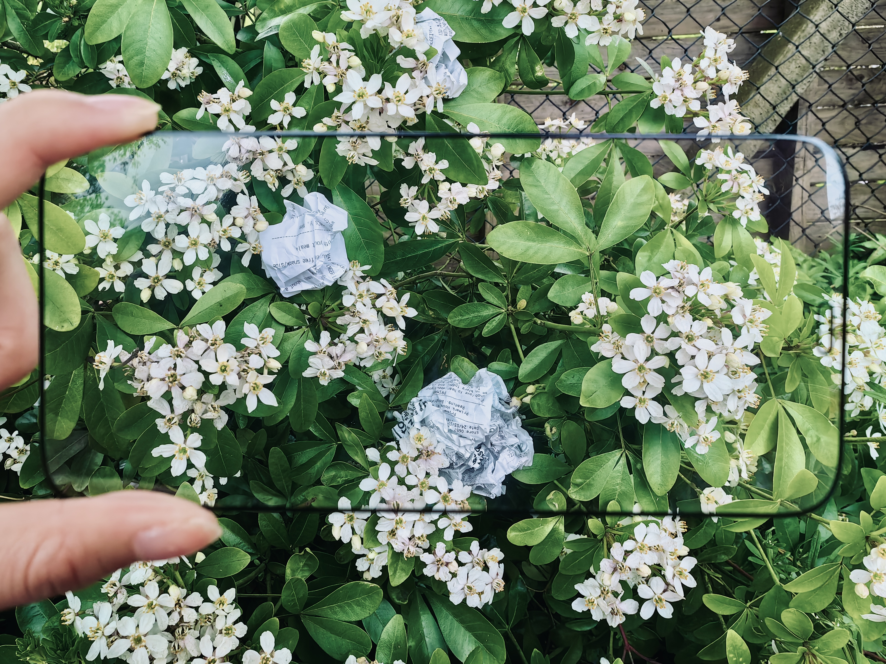
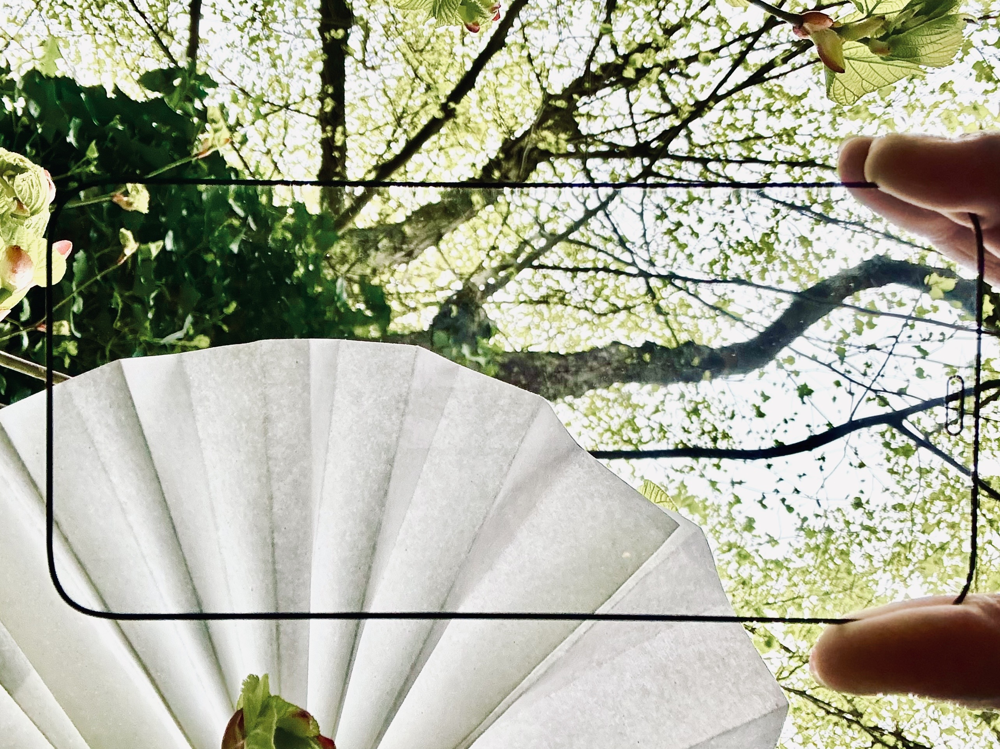

Photograhpy

Shoreline, crab and recycled materials 2024
This photograph portrays a serene coexistence at a stony tidal beach, where a broken glass bottle containing crabs, stones, and seawater rests beside a rock encrusted with shells and moss. An inoperative data cable entwines with the moss, illustrating a quiet observation of the coexistence between humans, their technological artifacts, and the natural world.

Stone shore, shell, crab and recycled materials 2024
This close-up photo captures a glass bottle and a data cable amidst crabs and moss in a natural setting, highlighting a serene proximity of man-made objects and wildlife. The image reflects on the coexistence of human technology and natural elements, presenting a visual meditation on their interconnected relationship.

Seaweed, cable, stone, snowflake-shaped decorative lights 2024
At the edge of a tidal stone beach, a rock covered with seaweed and moss is encircled by snowflake-shaped decorative lights, with a discarded black data cable woven through. The combination of these elements not only showcases the vigour of natural growth but also illustrates how human-made technological items are intricately intertwined with the natural environment, creating a scene of coexistence.

Stone beach, cable, glass and waste part 2024
This photo was taken in Nice, France, by the sea, the blue sea and these human beings on land after the secondary production of accessories out of place, in the sea has been beaten and has long been smoothed out the edges of the stone also do not know like these difficult to be naturally absorbed by the decomposition of plastic, glass and LEGO accessories when to disappear completely.

Stone beach, twig, cotton fluff 2024
This photograph displays a crafted faux fish, composed of twigs, cotton, small fruits, and other natural and synthetic materials, lying on a beach made of large stones. The image invites a contemplative view of the intermingling of natural and man-made elements, reflecting on the subtle coexistence of humanity, technology, and nature in a serene setting.

Stone, cotton fluff, pine and recycled materials 2024
This close-up photograph intricately captures a faux fish crafted from natural materials and man-made elements, including twigs, cotton, and various small debris, set against the backdrop of a smooth stone beach. Through detailed imagery, the photo presents a dialogue between artificial creations and the natural landscape, reflecting the interplay between human innovation and the natural environment. It prompts a deep contemplation of the complex and subtle coexistence between the two.

Lawn, branch, tissue, feather and recycled materials 2024
This photograph creatively blends natural and artificial elements on a lush lawn. A thick branch, adorned with painted daisies and wrapped in an inoperative data cable, lies among real daisies, with petals simulated by cut plastic bottle parts. It reflects on the subtle coexistence of nature with man-made objects and technology, suggesting a integration but not exactly with preference.

Straws, coloured clay, plastic greens 2024
A small ecosystem is constructed with blooming flowers made from straws, fake clay made from Play-Doh and colourful leaves and flowers made from plastic fragments, and a simulated wallpaper is created with the help of a mobile phone screen protector to replace the mobile phone itself. Human-made objects, which do not exist in nature, reappear in the public eye as ‘fakes’, and the ecological body, which has gradually faded away, is about to disappear.

Piles of plastic bottles 2024
Recycled plastic bottles in green colours, squeezed, compressed and eventually stacked together, are randomly ‘dumped’ under the trunks of mighty trees, hidden away and forged into strong stones or bricks to force their way into the mix, when the truth is obvious: how can a product of nature that doesn't belong to nature be perfectly adapted to it?

White flowers, white receipts 2024
By cleverly folding discarded receipts into the shape of flowers and placing them into flowers in a natural environment, this photo creates a profound visual work. It shows the coexistence of the products of human consumption culture and nature. The small artificial flowers are visually integrated with the real, triggering the audience to reflect on the impact of modern social consumption behaviour and the natural environment. This creative expression beautifies everyday waste and reminds us to reconsider our lifestyle and its long-term influence on the environment.

Mushroom of paper 2024
This photo cleverly uses a paper fan, reflecting the surrounding trees and green leaves through a phone screen protector, creating a visual misalignment and synthesis. The traditional element of the paper fan combined with modern technology symbolizes the historical depth and technological progress of human culture. Through this creative photo, the photo explores how human activities shape our visual and environmental perceptions. The natural form of the trees and the artificial shape of the paper fan converse, reflecting the close and complex relationship between humans and nature, reminding us to seek sustainable and harmonious ways of living.

Slender twigs, stone, artificial materials 2024
On a sunlit lawn, a bird's nest intricately woven from branches and colourful synthetic materials sits quietly. At its heart lies a stone resembling a bird's egg. This image represents more than just a subtle coexistence between natural and man-made objects; it also symbolises the connection and interdependence between humans and the natural environment.

Stone, coal, dirt, plants, moss and glass 2024
This photograph shows a glass jar nestled amongst the undergrowth, bathed in sunlight. Inside, a mini ecosystem thrives, seamlessly blending with the surrounding shrubbery. The scene captures a miniature world within the glass, illustrating the coexistence of man-made objects, technology, and the natural environment, symbolizing an integration.

Paper and paint 2024
This photograph captures an installation formed by painting equipment, discarded painting paper piled on the ground. The brown pigment on the paper simulates the texture of the soil, while the wasted water in the bucket simulates the muddy condition of the land after rain. The installation reminds viewers to rethink the relationship between humans and nature by combining props used in daily life with natural landscapes.

Flowers and paper 2024
This photograph captures a device in which discarded wrapping paper is tied into the shape of a plant flower and placed on a real plant branch to simulate a flower. The fact that it is the discarded paper that is tied into the flower at the centre of the mobile phone film, rather than a real flower growing in nature, directs the viewer's attention to the wrapping paper that has been used in the skeuomorph design and prompts the viewer to think about the real relationship that human beings have with the natural environment in their use of media technology.
🔘 Poet
In the gentle cradle of a valley,
a tower hums—it shadow sharply against the soft dusk,
where tweets are not just the language of birds,
but bytes streaming into the infinite ether.
--
a stream cuts a path through ancient earth,
mirrored by cables buried beneath,
carrying whispers of distant voices,
as real as the wind rustling through leaves.
--
Circuits interweave with roots,
data flows as tree sap rises,
in the veins of this living, breathing landscape
where pixels and petals coexist,
each moment captured, coded.
And the world returns once more.
This poem explores the coexistence of natural landscapes and modern technology by portraying the integration of natural and man-made elements. In the "gentle cradle of a valley," a "humming tower" contrasts with the nature element of "soft dusk," symbolising the presence of technology within nature. The mention of "tweets" no longer solely refers to the language of birds but symbolises information technology. The parallel depiction of a “stream” and “underground cables”, along with the interweaving of “circuits” and “roots”, further emphasises the mutual permeation of the natural world and the man-made realm. The metaphor of “data flow” and “rising tree sap” paints a picture of an active and interconnected world.
This poem utilises the free verse form, devoid of fixed rhythm and structure, allowing for a more fluid and free expression of imagery and abstract concepts. Overall, the poem vividly uses metaphor and symbolism to depict a relation of continuous and cyclical coexistence between nature and technology.
BACK